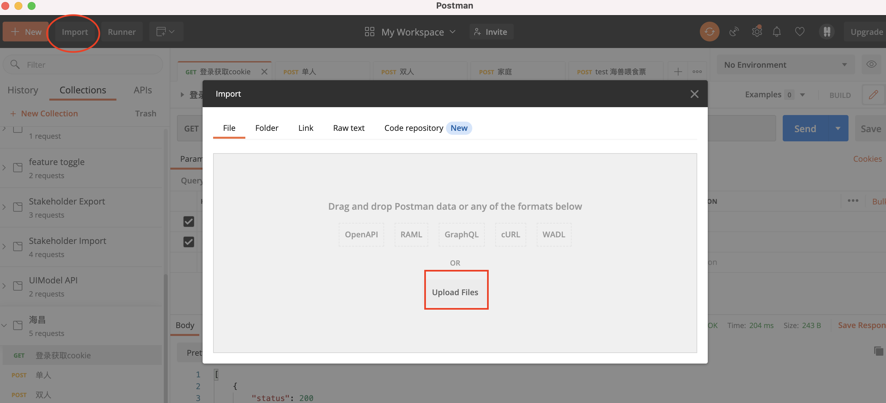
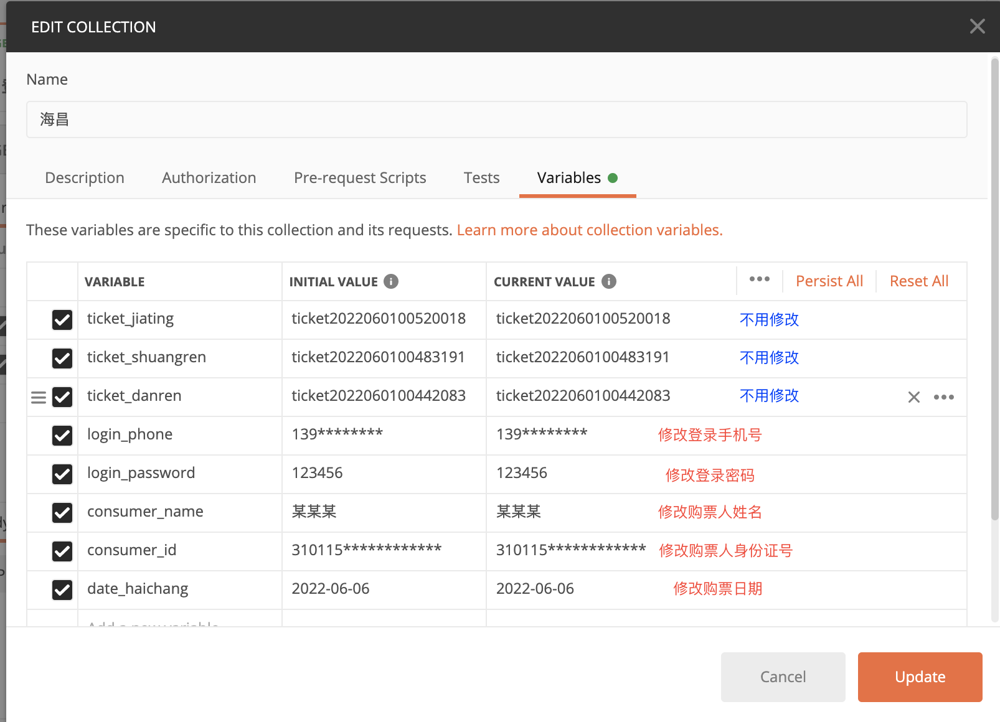
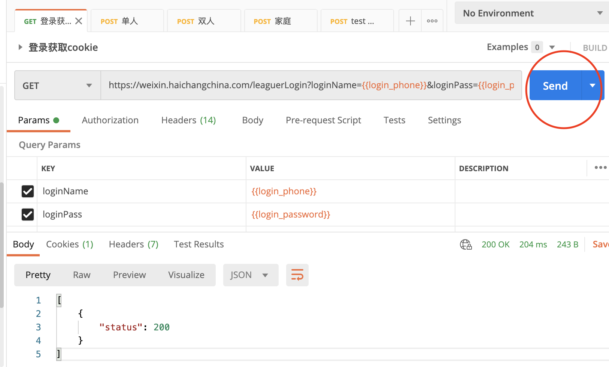
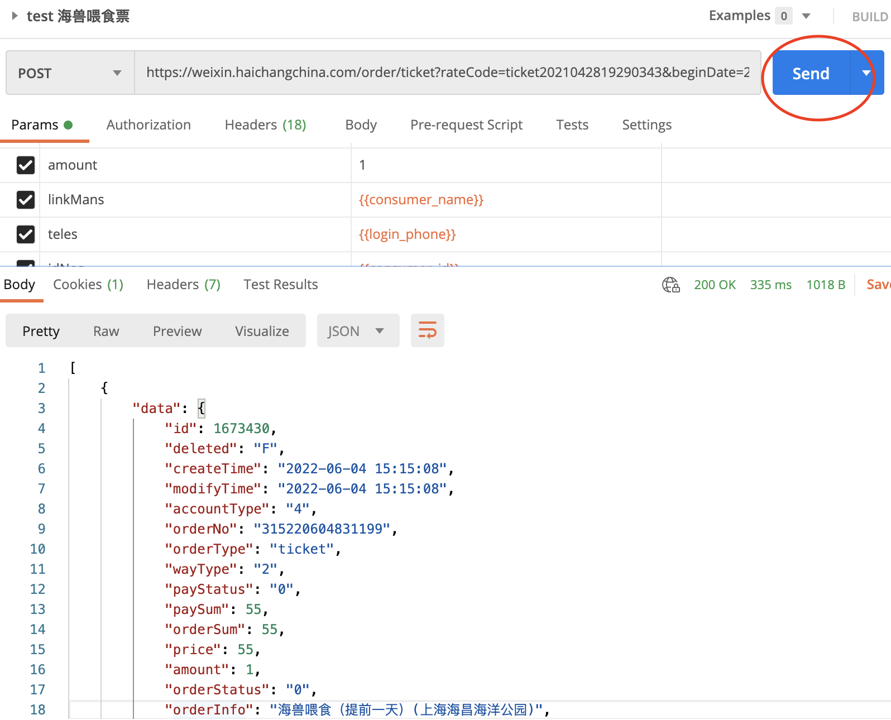

海昌抢票攻略
前提
- 手机注册海昌账号https://shop.haichangoceanpark.com/register
- 电脑安装postman，下载地址https://www.postman.com/downloads/
准备
- 下载postman collection到你的电脑
- 导入下载的文件

- 右击"海昌"/"修改", 修改你的账号密码，买票人姓名和身份证号

- 打开"登录获取cookie"，点击发送

- 打开"test 海兽喂食票"，点击发送

好了，现在浏览器打开订单页面https://shop.haichangoceanpark.com/member/order，你将能看到刚刚的"海兽喂食"订单（这里只是测试，千万别支付哦！）。如果看到订单，恭喜你，说明一切准备就绪，静等抢票了！
温馨提示：一个账号一种类型（单人/双人/家庭）只能抢一个票。如果要抢多张票要注册多个账号哦，最好多台电脑同时抢，如果实在没有多台电脑可以开多个postman窗口。
开抢前25分钟登录
因为开抢前后网站几乎崩溃，所以一定要提前20-30分钟登录。也不能太早登录，不然登录会过期，又需要重新登录。
- 打开"登录获取cookie"，点击发送
- 登录完没事了，确保万无一失可以再次"test 海兽喂食票"
开抢了
- 打开"单人"，点击发送
- 打开"双人"，点击发送
- 打开"家庭"，点击发送
- 重复发送，直到成功为止！（按照前两天的经验，一般开抢后18-19分钟容易抢到票。）
- 如果出现"message": "请勿重复下单!", 说明你手速太快，可以等个5秒再发送。
- 如果出现长长的html说活动太火爆/Error/null, 不要灰心, 坚持抢票30分钟，直到出现类似"海兽喂食"一样的response
抢到喽
还没结束，一定到订单页面支付哦，浏览器打开https://shop.haichangoceanpark.com/member/order，虽然是0元，也要点支付，不然订单会自动取消哦！！！
本站总访问量次